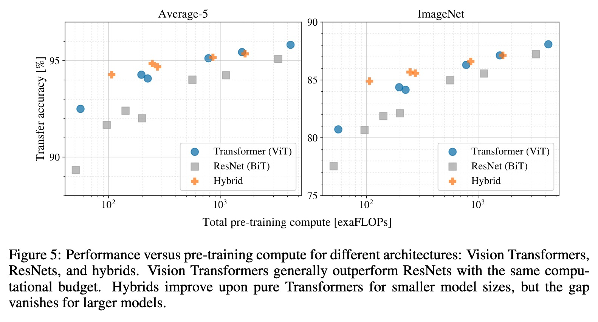

Vision Transformer from Scratch in 80 Lines
There are plenty of ViT implementations on GitHub – timm, lucidrains', and the reference code from the paper, but these are complex and hard to follow. The basic idea is simpler than it looks. Below, I build a minimal ViT in ~80 lines of PyTorch to highlight the essentials. Patch embedding, for example, is just a simple convolutional layer.
This minimal version is deliberately incomplete: I’m skipping positional embeddings and multi-head attention (using a single-head variant), keeping the MLP shallow, and omitting the MLP’s activation entirely. The goal is clarity, not benchmark performance — and with the moving parts stripped away, we can build an intuition for ViT at the end of this article.
Input preprocessing – Patch Embedding
Transformers operate on sequences of tokens. A token is simply a vector representation of some part of the input. In NLP, tokens represent words or subwords. In vision, tokens represent image patches (Fig. 1).
Fig. 1.1 shows a 224×224 pixel (px) image split into 196 patches of 16×16 px.
Each patch is projected into an embedding vector of dimension embed_dim (Fig. 1.2). Typical ViT models use embedding sizes between 384 and 1024. This is just a design choice; we use a size of 512 in this example. The 2D grid of patch embeddings is then reshaped into a 1D sequence of tokens using flatten() (Fig. 1.3). In this setting, one 2D patch with 16×16 RGB pixels, containing 768 values in total, is turned into a 1D vector of size 512. These 1D vectors, each representing one patch in the image, are then fed as a sequence into the LLM-like transformer architecture (Fig. 1.4).
embed_dim = 512 numbers – one token. (1.3) flatten() reads the 14×14 grid of tokens row by row into a sequence of 196 tokens. The eye token lands at position 6·14 + 4 = 88.In practice, patch extraction (Fig. 1.1) and projection (Fig. 1.2) are implemented using a single convolution with kernel size and stride equal to the patch size. In PyTorch, the stride defaults to 1: the kernel shifts by one pixel at a time, so consecutive windows overlap almost entirely. Setting the stride equal to the kernel size instead makes each window start exactly where the previous one ended — which is precisely what we want: it patchifies the input image. This extracts non-overlapping patches and projects each 16×16 px patch to a single embedding vector in one step.
import torch.nn as nn
class PatchEmbedding(nn.Module):
"""Convert image into patch embeddings."""
def __init__(self, patch_size, embed_dim):
super().__init__()
self.conv = nn.Conv2d(
3, embed_dim, kernel_size=patch_size, stride=patch_size
)
def forward(self, x):
# x: (batch, 3, H, W) -> (batch, embed_dim, H/P, W/P)
x = self.conv(x)
# Flatten spatial dims and make channel last:
# (batch, embed_dim, N) -> (batch, N, embed_dim)
x = x.flatten(2).transpose(1, 2)
return xNote that because we removed the explicit 2D structure, the transformer has no explicit information about the spatial ordering of the tokens. It does not know which tokens map to patches that are next to each other in the image. This is solved by adding positional embeddings, but we omit that in this example just to keep it short and simple.
Self-Attention
Self-attention lets each patch effectively “look at” every other patch to gather context (Fig. 2). It mixes information across spatial locations – acting as a spatial mixer. For simplicity, we implement single-head scaled dot-product attention instead of the multi-head variant used in standard ViT models.
class Attention(nn.Module):
"""Single-head self-attention."""
def __init__(self, dim):
super().__init__()
self.q = nn.Linear(dim, dim)
self.k = nn.Linear(dim, dim)
self.v = nn.Linear(dim, dim)
self.proj = nn.Linear(dim, dim)
self.scale = dim**-0.5
def forward(self, x):
B, N, C = x.shape
# q, k, v: (B, N, dim)
q, k, v = self.q(x), self.k(x), self.v(x)
# Scaled dot-product attention
# attn: (batch, N_q, N_k)
attn = torch.matmul(q, k.transpose(-2, -1)) * self.scale
attn = attn.softmax(dim=-1)
x = torch.matmul(attn, v)
x = self.proj(x)
return x
The projections self.q, self.k, and self.v create query (q), key (k), and value (v) vectors. q, k, and v are simply different projections of the same input. v stores the information encoded in each patch and is passed to the next transformer block. Before being passed on, it is scaled by attention weights computed from q and k (Fig. 2.1). This is how tokens representing different parts of the image influence each other based on their content (Fig. 2.2).
This framework allows the model to dynamically focus on different parts of the input image, enabling it to capture global context effectively by amplifying relevant features and suppressing less important ones. Specifically, it determines feature relevance through the interaction of q and k, and accordingly adjusts the embedding information of each token in v that is passed to the next block, strengthening representations when q and k match and weakening them when they do not.
The attention formula is:
Attention(q, k, v) = softmax(qkT / √d) · v
The dot product produces similarity scores between tokens. The softmax normalizes across the key (token) dimension for each query – every row of the attention matrix sums to 1 (Fig. 2.1). The resulting weights then mix the value vectors into the output tokens (Fig. 2.2). Scaling by √d stabilizes gradients when the embedding dimension grows.
v = self.v(x)). The output for the eye token is the element-wise weighted sum of all 196 value vectors, where each weight is one entry of the eye query’s attention row from (2.1) – attn[eye, key] – and the highlighted first cells show one element of the sum. In code this is one row of x = torch.matmul(attn, v): (196, 196) @ (196, 512) → (196, 512), where the shared key axis is summed away – so the same weighted sum runs for every token in parallel. The weights and values shown are illustrative.Transformer Block
A transformer block combines attention with a feedforward network (here simplified to a single linear layer). The "pre-norm" variant applies LayerNorm before each sublayer, with residual connections around both.
class TransformerBlock(nn.Module):
"""Single transformer block with pre-norm."""
def __init__(self, dim):
super().__init__()
self.norm1 = nn.LayerNorm(dim)
self.attn = Attention(dim)
self.norm2 = nn.LayerNorm(dim)
self.mlp = nn.Linear(dim, dim)
def forward(self, x):
x = x + self.attn(self.norm1(x))
x = x + self.mlp(self.norm2(x))
return x
The residual connections (x = x + ...) let gradients flow directly
through the network, enabling training of deep models.
Putting It Together: ViT
The classification token (CLS) is an additional learnable token that flows through the transformer together with the input tokens. It acts as a register, where the transformer stores a global representation of the input. At the end of the network, right before the classification head, instead of aggregating spatial information using global average pooling (as often done in CNNs), the ViT discards the spatial tokens and uses only the CLS token for final classification.
class ViT(nn.Module):
"""Vision Transformer for image classification."""
def __init__(self, patch_size=16, embed_dim=512, num_classes=10):
super().__init__()
self.embed_dim = embed_dim
self.patch_embed = PatchEmbedding(patch_size, embed_dim)
self.cls_token = nn.Parameter(torch.randn(1, 1, embed_dim))
self.blocks = nn.Sequential(TransformerBlock(embed_dim))
self.head = nn.Linear(embed_dim, num_classes)
def forward(self, x):
x = self.patch_embed(x)
# Prepend CLS token: (batch, 1, embed_dim)
cls = self.cls_token.expand(x.shape[0], 1, self.embed_dim)
x = torch.cat([cls, x], dim=1)
x = self.blocks(x)
# Classify using CLS token (first position)
return self.head(x[:, 0])Why a CLS token? It's a design choice borrowed from BERT. The ViT architecture is heavily influenced by language models. In language models, the CLS token is used to aggregate sequence information for downstream classification tasks. You could achieve similar results also by employing global average pooling instead of using CLS token in many vision tasks.
Running the Code
Here's how to instantiate the model and run a forward pass:
import torch
# Create model
model = ViT(patch_size=16, embed_dim=512, num_classes=10)
# Random batch of 4 images, 3 channels, 224x224
x = torch.randn(4, 3, 224, 224)
# Forward pass
logits = model(x) # shape: (4, 10)
print(f"Input shape: {x.shape}")
print(f"Output shape: {logits.shape}")Tested with PyTorch 2.0+, Python 3.10+.
Intuition
Aggressive Spatial Compression at the Entry Point
Each patch embedding collapses a 16×16×3 = 768-value region of pixels into a single 512-dim vector — a linear map, all in one step. That's aggressive: projecting 768 values down to 512 cannot be inverted, so it is lossy by construction. In practice the loss is mild, because natural image patches are highly redundant — neighbouring pixels are strongly correlated, so most of the variance lives in far fewer than 768 dimensions and the learned projection can keep what matters. What's unavoidable is that the explicit spatial structure within each patch, along with the convolutional inductive bias, is gone before the network has even started processing anything.
The original ViT paper actually acknowledged this. They proposed a Hybrid Architecture as an alternative: instead of that single brutal downsampling convolution, they used a pre-trained convolutional stem (a modified ResNet) to reduce spatial dimensions gradually. The idea is that a CNN is better at this early low-level processing than a raw patch projection.
Does it help? Yes — but only at smaller model sizes. Figure 5 in the paper shows hybrids consistently outperform pure ViTs when the model is small. Once you scale up, the gap closes and the hybrid advantage disappears entirely.

The practical takeaway: if you are training a small ViT, it is worth also trying the hybrid variant — a CNN stem up front, a transformer on top. This is especially true when you do not have much data, since the convolutional stem brings back the inductive bias the raw patch projection throws away. On your own task, it is a cheap experiment that may well pay off.
ViT is low-pass filter
Vision Transformers behave as low-pass filters, while CNNs behave as high-pass filters.
CNNs typically start with small convolutions — 3×3 in EfficientNet, 7×7 in ResNet. Small kernels respond strongly to sharp local changes — edges — making them naturally high-pass. ViT's 16×16 patch convolution averages over a much larger region, making it more sensitive to low-frequency information — global structure and shape rather than fine edges.
This low-pass character isn't just a consequence of patchification. It's also built into self-attention itself, as shown in How do Vision Transformers Work?. It was further confirmed experimentally in this study on adversarial robustness, and again in my recent no-box attack (RINA), which perturbs the low-frequency, early-layer features. It degrades transformers more than convolutional models, and outperforms the high-frequency HIT attack precisely on those transformers — exactly what the low-pass-filter hypothesis predicts.
References
Papers
- Dosovitskiy et al., "An Image is Worth 16x16 Words" (2020) – The original ViT paper
- Vaswani et al., "Attention Is All You Need" (2017) – The transformer architecture paper
- Adversarial Robustness Comparison of Vision Transformer and MLP-Mixer to CNNs – ViTs rely on low-frequency information; robust to high-frequency perturbations
- How do Vision Transformers Work? – additional insight into how ViT works
- Dvořáček et al., "Resolution-invariant no-box attack" (2026) – A no-box adversarial attack (RINA) that perturbs the low-frequency, early-layer features; it drops accuracy especially on transformer models, outperforming the high-frequency HIT attack — consistent with the low-pass-filter hypothesis
Production-ready implementations
These are the full-featured implementations mentioned in the introduction:
- timm – PyTorch Image Models library by Hugging Face
- vit-pytorch – Clean PyTorch implementation by lucidrains
- vision_transformer – Original JAX implementation by Google Research